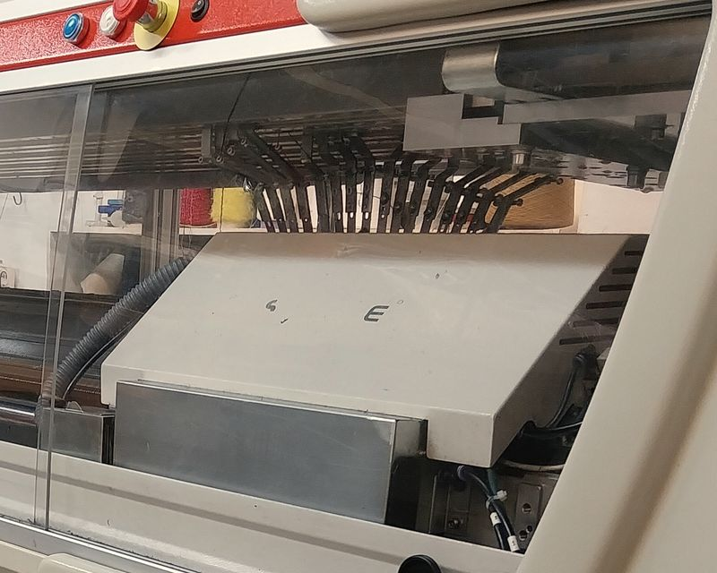
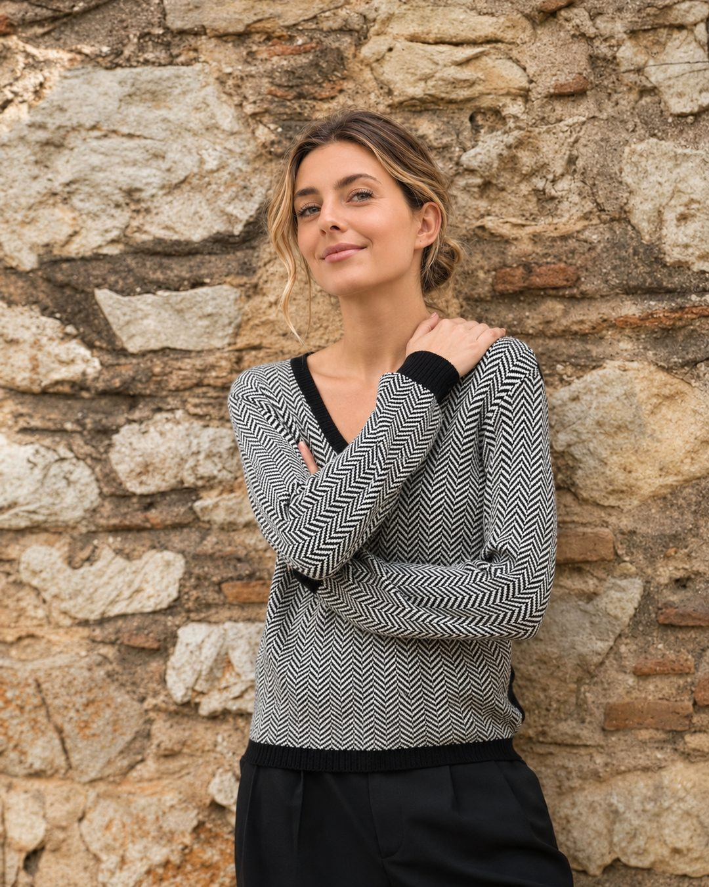
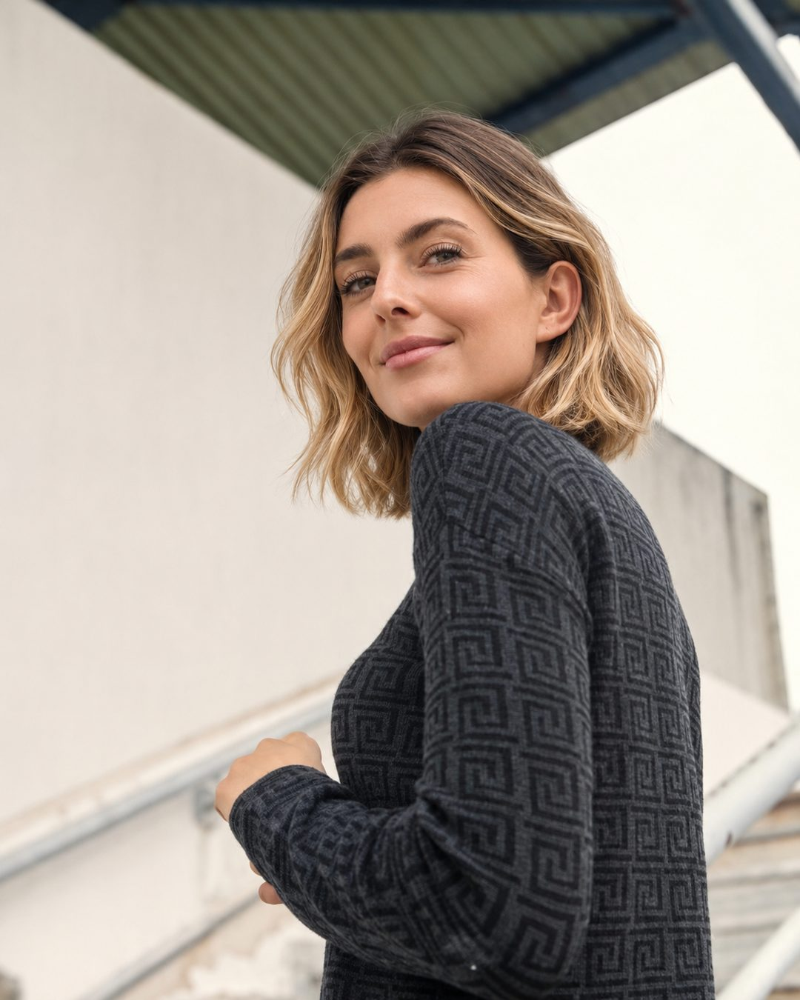
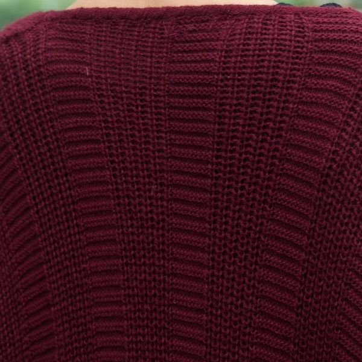
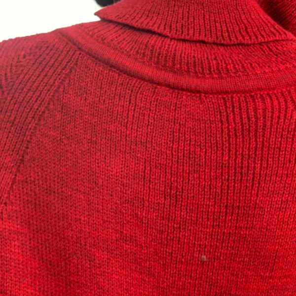
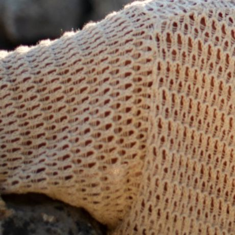
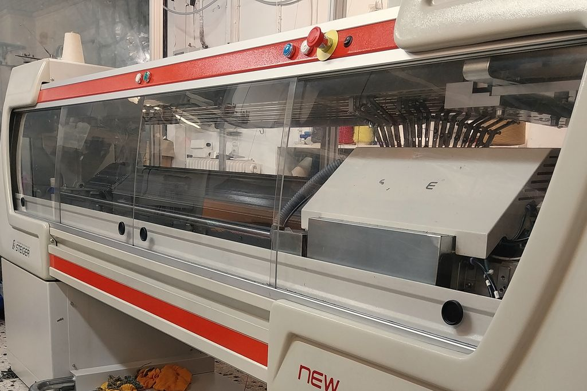

Φασόν πλεκτών ενδυμάτων · από το 1982
Από το νήμαστο ρούχο σας.
Παραγωγή πλεκτών ενδυμάτων για επιχειρήσεις ένδυσης και επαγγελματίες. Εσείς φέρνετε το σχέδιο, εμείς το κάνουμε παραγωγή, στο εργαστήριό μας στη Νέα Ιωνία, από το 1982.


- 1982ίδρυση της βιοτεχνίας
- 44χρόνια στα πλεκτά
- Δείγμαπρος έγκριση πριν από την παραγωγή
- Νέα Ιωνίαεργαστήριο και showroom
Υπηρεσίες φασόν
Τα στάδια της παραγωγής σας.
Από την πλέξη ως τη συσκευασία. Πείτε μας τι χρειάζεται το σχέδιό σας και θα σας προτείνουμε πώς θα προχωρήσει η παραγωγή.
Πλέξη
Πλέκουμε τα κομμάτια του ενδύματος στις μηχανές μας, σύμφωνα με το σχέδιο και το τεχνικό φύλλο σας.
02Κοπή
Ακριβής κοπή των πλεκτών κομματιών, ώστε το ρούχο να κρατά τη φόρμα και τις αναλογίες του σχεδίου.
03Ραφή
Η ραφή είναι αυτό για το οποίο μας ξέρουν: καθαρές ενώσεις και φινίρισμα που κρατούν τη φόρμα του ρούχου.
04Σίδερο & φινίρισμα
Σιδέρωμα και τελικός έλεγχος, ώστε κάθε κομμάτι να φεύγει έτοιμο.
05Συσκευασία
Δίπλωμα και συσκευασία των ενδυμάτων, έτοιμων για αποστολή.
06Δείγμα
Πριν από την παραγωγή φτιάχνουμε δείγμα, για να εγκρίνετε νήμα, εφαρμογή και λεπτομέρειες.
Η διαδικασία
Έξι βήματα, ένα συνεχές νήμα.
Από το πρώτο σκίτσο μέχρι το συσκευασμένο ρούχο, ξέρετε σε ποιο σημείο βρίσκεται η παραγωγή σας. Δείτε αναλυτικά
Σχέδιο
Μας φέρνετε σκίτσο, τεχνικό φύλλο ή ένα ρούχο αναφοράς.
Νήμα
Συζητάμε μαζί σύνθεση, πάχος και χρώμα.
Δείγμα
Κατασκευάζουμε δείγμα για έλεγχο και έγκριση.
Πλέξη
Η παραγωγή ξεκινά στις πλεκτομηχανές μας.
Ραφή
Κοπή, ραφή, σίδερο και ποιοτικός έλεγχος.
Παράδοση
Συσκευασία, έτοιμο για αποστολή.
Δημιουργίες
Δημιουργίες που παίρνουν μορφή.
Πλεκτά ενδύματα που πλέχτηκαν και ράφτηκαν στο εργαστήριό μας. Ρίγες, ζακάρ, ψαροκόκαλο, διάτρητες πλέξεις: ενδεικτικά για το εύρος της παραγωγής μας.




Κάθε κομμάτι ξεκινά από ένα σχέδιο. Έχετε κάτι αντίστοιχο στο μυαλό σας;
Νήματα & υφές
Νήμα, πυκνότητα, υφή.
Το αποτέλεσμα ξεκινά από το νήμα. Συζητάμε μαζί σύνθεση, πάχος και χρώμα, και ελέγχουμε την υφή στο δείγμα πριν από την παραγωγή. Νήματα και υλικά

Ανάγλυφη πλέξη
Οριζόντια ανάγλυφα που δίνουν σώμα και κίνηση στο ρούχο.

Ραγλάν ένωση
Εκεί που το μανίκι συναντά το σώμα φαίνεται η φροντίδα στη ραφή.

Διάτρητη πλέξη
Ανοιχτή, ελαφριά πλέξη για καλοκαιρινά πλεκτά.


Οι πλεκτομηχανές του εργαστηρίου στη Νέα Ιωνία. Δεξιά: πλέξη σε εξέλιξη.
Το εργαστήριο
Μια οικογένεια, ένα εργαστήριο, από το 1982.
Στη Νέα Ιωνία, οι πλεκτομηχανές μας δουλεύουν δίπλα στα χέρια που ράβουν και φινίρουν κάθε κομμάτι.
Η ραφή είναι αυτό για το οποίο μας ξέρουν.
Showroom
Στον χώρο της βιοτεχνίας λειτουργεί showroom. Επικοινωνήστε μαζί μας για να οργανώσουμε την επίσκεψή σας.
Έχετε ένα σχέδιο;Ας το πλέξουμε.
Στείλτε μας το σκίτσο, το τεχνικό φύλλο ή ένα ρούχο αναφοράς. Θα σας απαντήσουμε με τις επιλογές και μια πρώτη προσφορά.